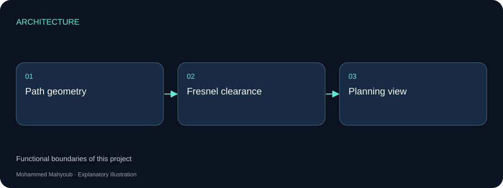
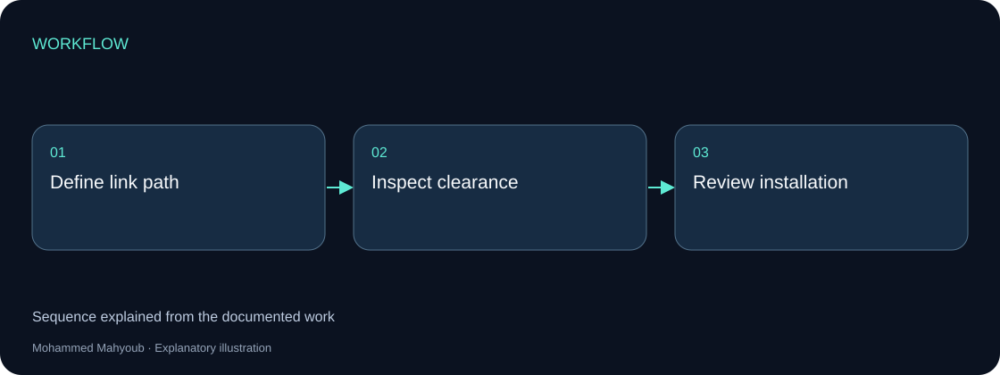

Engineering Software · Wireless Planning
Line-of-Sight & Fresnel Zone Wireless Planning Tool
Developed a planning tool for line-of-sight analysis and Fresnel-zone clearance in point-to-point wireless links.
Implemented Project
System architecture

Implementation scope
Line-of-sight establishes the direct path between antennas. Fresnel analysis examines clearance around that path, giving the planner a different view from a power-only link budget.
Engineering approach
The available planning image is retained with its source context. This tool is separated from both the RF budget calculator and the actual wireless network deployment.

Reading the source planning image
The image shows two antennas, a dashed direct path, buildings and trees under a wave-propagation title. It has no scale, terrain elevations, input fields or calculated clearance results. The blue wave symbols are illustrative; they do not describe the geometric Fresnel envelope. Treat this image as a concept illustration.
Proposed geometry engine
Use endpoint elevations, a sampled terrain profile, obstacle heights, frequency and a documented effective-Earth factor. Put elevations on a common reference. Calculate the direct ray and the first Fresnel radius at every path sample, including any Earth-curvature adjustment that the imported profile has not already applied.
λ = c / f
r1 = sqrt(λ × d1 × d2 / (d1 + d2))
LOS(x) = Ht + (Hr − Ht) × x / D
Earth bulge(x) ≈ x × (D − x) / (2 × k × RE)
Clearance = LOS − terrain − obstacle − Earth bulge
All lengths in these equations use metres and frequency uses Hz. A 60% first-zone clearance is an initial planning target, subject to the path, refraction and availability assumptions; it is not a guarantee of link performance. Avoid applying the curvature correction twice.
Example and source limitation
Using the RF poster’s 5.02 km path at 5.8 GHz, the first-zone radius at the midpoint is approximately 8.05 m; 60% is 4.83 m. The RF poster’s 7.15 m radius and 6.43 m required clearance do not match this scenario and target. Its 8.30 m available clearance cannot be checked without terrain and obstacle elevations.
Proposed planning display
Plot distance against elevation and show terrain, obstacles, the direct ray, Fresnel bounds and the clearance target. A critical-point table should list distance from the transmitter, obstacle elevation, available clearance and deficit. Compare alternative antenna heights or routes by recalculating the complete profile.
Verification scenarios
Check an unobstructed path, an obstacle near the midpoint, an obstacle near an endpoint, unequal ground elevations and different k factors. Reversing the endpoints with equivalent data should preserve the engineering assessment.
Reference: ITU-R P.530: terrestrial line-of-sight path-clearance considerations.
Source context
Original project posters and interface screenshots are identified separately from explanatory source diagrams. The gallery documents this project only. Open any figure to inspect it at full available resolution.